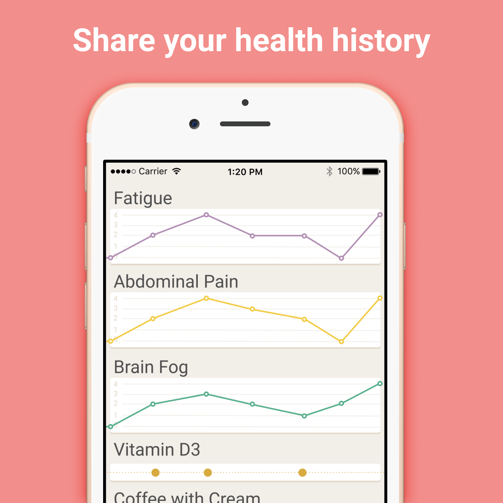
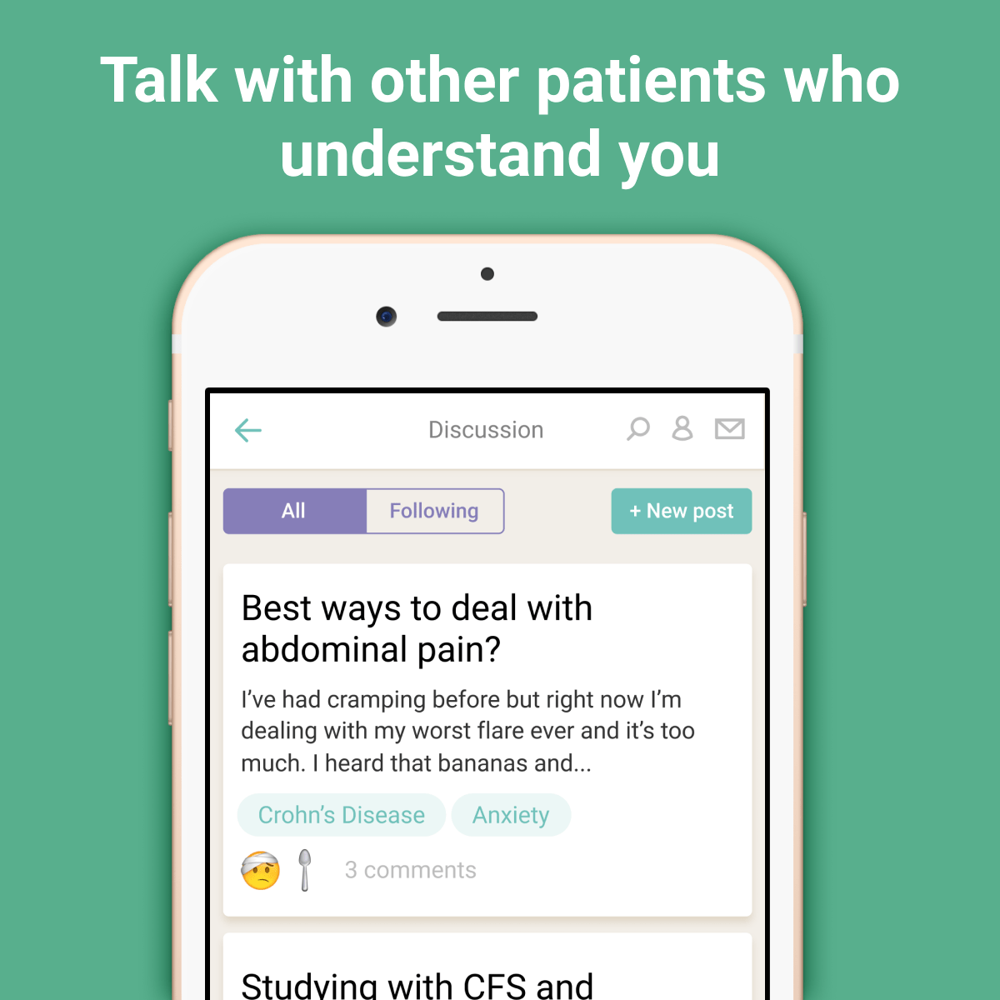
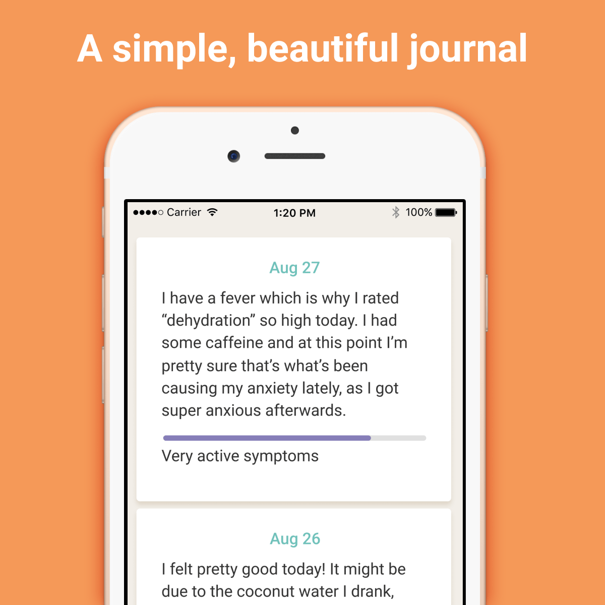
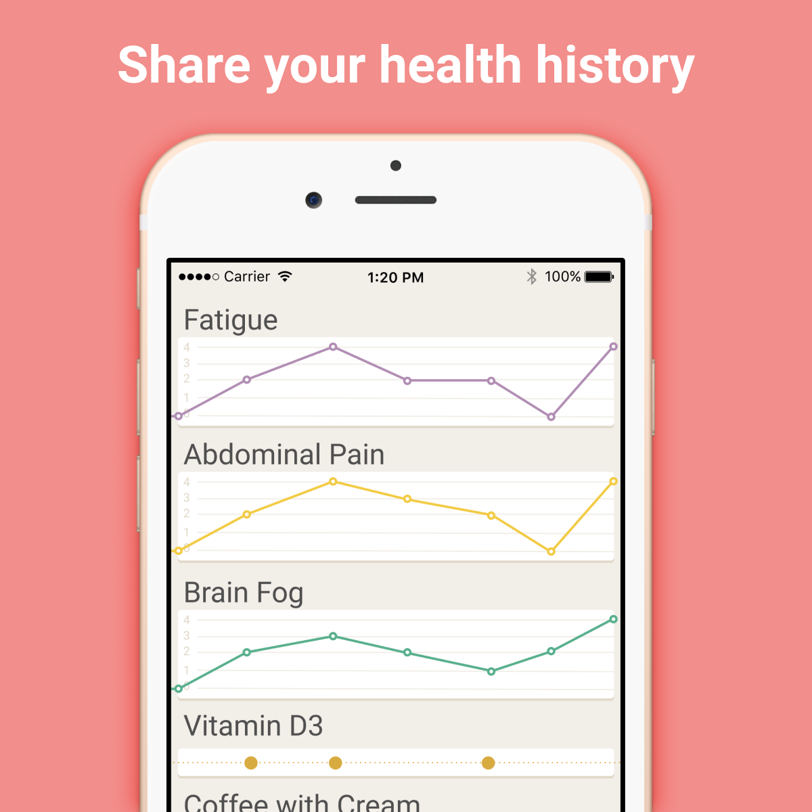
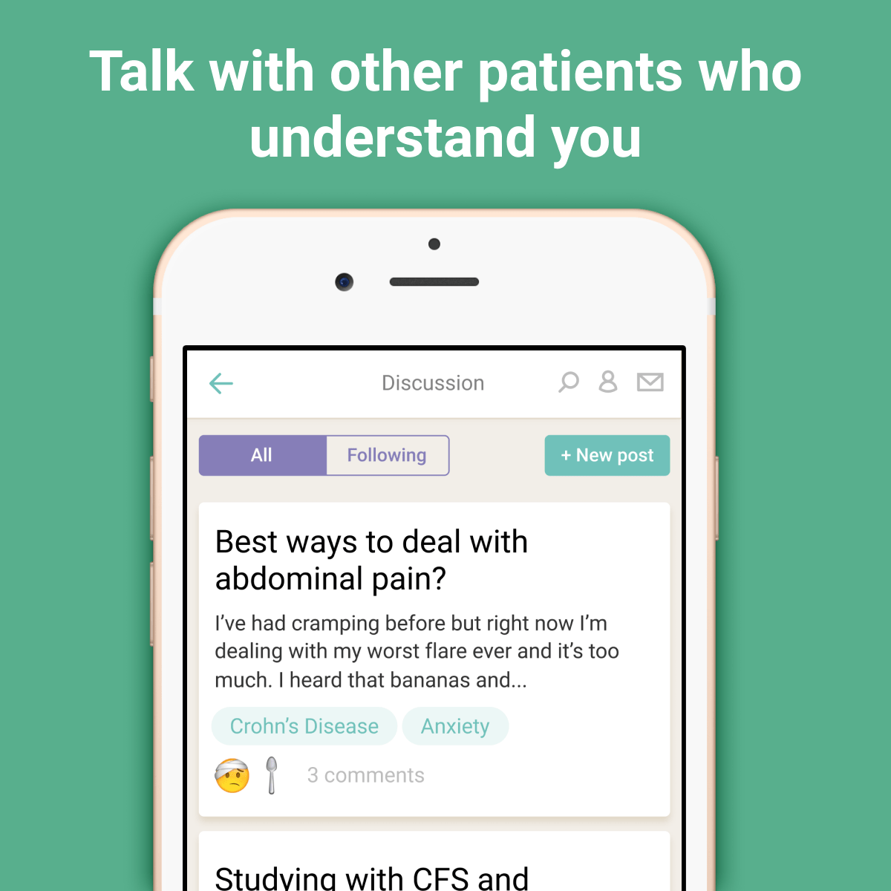
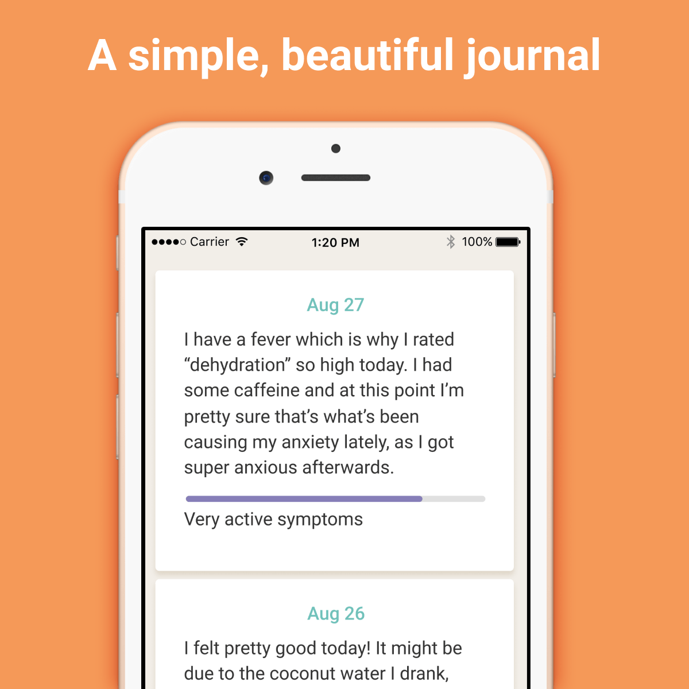

A simple, beautiful app that helps you find symptom triggers and treatments.
Get the iPhone app Get the Android app Sign up online
A simple, beautiful app that helps you find symptom triggers and treatments.
Get the iPhone app Get the Android app Sign up online 





Flaredown is design, developed, and supported by patients. See what they’re saying:
@flaredown app is amazing. Track symptoms, meds, pain levels, journal, etc. Per day. It's been amazing - definitely would recommend.
— abby sams 🦈 (@abby__sams) April 9, 2017
I've been using this app for years to track symptoms & medication. So useful!!! https://t.co/yfRpYYCfdx
— Lia Pas (@lia_pas) June 29, 2017
Thanks @flaredown for making a super useful app for understanding chronic, invisible & misunderstood illnesses!
— Rachel Devine (@sesameellis) July 29, 2017
How did I not know @flaredown has an app now! So happy! Chronic illness peeps! Great free illness tracking!
— Space Merrow (@SpaceMerrow) July 10, 2017